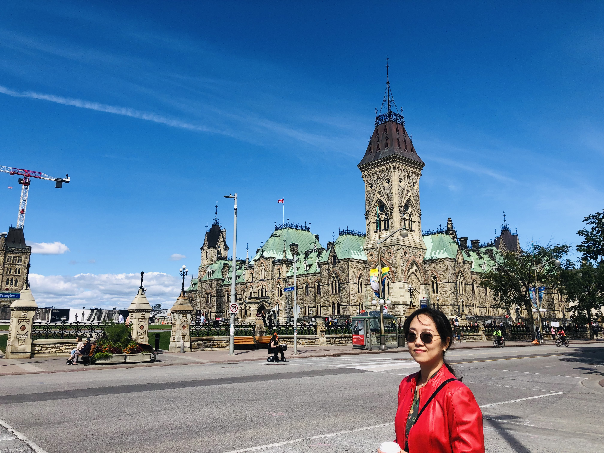

1st
My name is Hyeonkyeong Park. People call me Joy or Park. I came from South Korea. It has been almost 11months since my husband and I came to Canada. We just had the 10th anniversary of the wedding last December here.
We have a dream of volunteering work to help people in a needed area. Because we know the saying,
We have a dream of volunteering work to help people in a needed area. Because we know the saying,
“There is more happiness in giving than there is in receiving.”-Acts 20:35So we are preparing slowly little by little to make our dream comes true.
2nd
Telling about me, there is good information that analyzed my personality well. My MBTI Test personality is INFP. It means I possess the INTROVERTED, INTUITIVE, FEELING, and PROSPECTING personality traits. I look quiet and unassuming, but I’m curious and motivated inside. So I like learning and trying something new. And I need time to get close at the first meeting since I am introverted. But after getting close, I love to empathize and communicate with others.
My photos

My Hobbies
- Watching Videos
- Editing & Making Videios
- Walking
- Cooking
- Playing Games